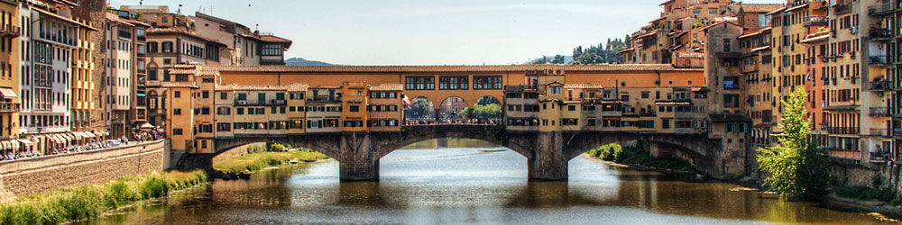

|  |
| Home The City Local Facts Travel Blogs Photo Gallery |
Religious BuildingsThe Duomo - Cathedral of Florence - Santa Maria del FioreSan Giovanni BaptisteryBasilica of Santa Maria NovellaBasilica of Sanat CroceBasilica of San Lorenzo - Brancacci ChapelSan Miniato al Monte(add pics to go with each one) |
Reference Links |